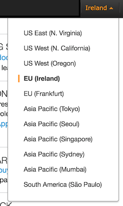
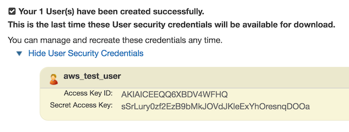
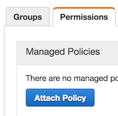
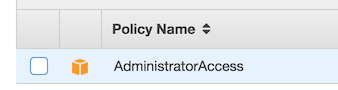
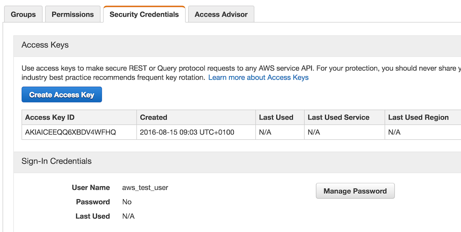
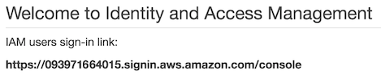
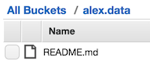

Building a Data Science Platform for R&D, Part 1 - Setting-Up AWS
Posted on Tue 16 August 2016 in data-science

Here’s my vision: I get into the office and switch-on my laptop; then I start-up my Spark cluster; I interact with it via RStudio to exploring a new dataset a client uploaded overnight; after getting a handle on what I want to do with it, I prototype an ETL and/or model-building process in Scala by using Zeppelin and I might even ask it to run every hour to see how it fairs.
In all likelihood this is going to be more than one day’s work, but you get the idea - I want a workspace that lets me use production-scale technologies to test ideas and processes that are a small step away from being handed-over to someone who can put them into production.
This series of posts is about how to setup and configure what I’m going to refer to as the ‘Data Science R&D platform’. I’m intending to cover the following:
-
setting-up Amazon Web Services (AWS) with some respect for security, and loading data to AWS’s S3 file system (where I’m assuming all static data will live);
-
launching, connecting-to and controlling an Apache Spark cluster on AWS, from my laptop, with the ability to start and stop it at will,
-
installing R and RStudio Server on my Spark cluster’s master node and then configuring SparkR and Sparklyr to connect to Spark and AWS S3,
-
installing and configuring Apache Zeppelin for Scala and SQL based Spark interaction, and for automating basic ETL/model-building processes.
I’m running on Mac OS X so this will be my frame of reference, but the Unix/Linux terminal-based parts of these posts should play nicely with all Linux distributions. I have no idea about Windows.
You might be wondering why I don’t use AWS’s Elastic Map Reduce (EMR) service that can also run a Spark cluster with Zeppelin. I did try, but I found that it wasn’t really suited to ad hoc R&D - I couldn’t configure it with all my favorite tools (e.g. RStudio) and then easily ‘pause’ the cluster when I’m done for the day. I’d be forced to stop the cluster and re-install my tools when I start another cluster up. EMR clusters appear to be better suited to being programmatically brought up and down as and when required, or for long-running clusters - excellent for a production environment. Not quite so good for R&D. Costs more too, which is the main reason Databricks doesn’t work for me either.
Sign-Up for an AWS Account!
This is obvious, but nevertheless for completeness head over to aws.amazon.com and create an account:
Once you’ve entered your credentials and payment details you’ll be brought to the main AWS Management Console that lists all the services at your disposal. The AWS documentation is excellent and a great way to get an understanding of what everything is and how you might use it.
This is also a good point to choose the region you want your services to be created in. I live in the UK so it makes sense for me to choose Ireland (aka eu-west-1):

Setup Users and Grant them Roles
It is considered bad practice to login to AWS as the root user (i.e. the one that opened the account). So it’s worth knowing how to setup users, restrict their access to the platform and assign them credentials. This is also easy to to.
For now I’m just going to create an ‘admin’ user that has more-or-less the same privileges as the root user, but is unable to delete the account or change the billing details, etc.
To begin with, login to the AWS console as the root user and navigate to Identity and Access Management (IAM) under Security and Identity. Click on the Users tab and then Create New User. Enter a new user name and then Create. You should then see the following confirmation together with new users’ credentials:

Make a note of these - or even better download them in CSV format using the ‘Download Credentials’ button. Close the window and then select the new user again on the Users tab. Next, find the Permissions tab and Attach Policy:

Choose AdministratorAccess for our admin user:

There are an enormous amount of policies you could apply depending on what your users need to access. For example, we could just as easily have created a user that can only access Amazon’s EMR service with read-only permission on S3.
Finally, because we’d like our admin user to be able to able to login to the AWS Management Console, we need to given them a password by navigating to the Security Credentials tab to Manage Password.

Note, that non-root users need to login via a difference URL that can be found at the top of the IAM Dashboard:

Log out of the console and then back in again using this link, as your new admin user. It’s worth noting that the IAM Dashboard encourages you to follow a series of steps for securing your platform. The steps above represent a sub-set of what is required to get the ‘green light’ and I recommend that you work your way through all of them once you know your way around. For example, Multi-Factor Authentication (MFA) for the root user makes a lot of sense.
Generate EC2 Key Pairs
In order for you to remotely access AWS services - e.g. data in in S3 and virtual machines on EC2 from the comfort of your laptop - you will need to authenticate yourself. This is achieved using Key Pairs. Cryptography has never been a strong point, so if you want to know more about how this works I suggest taking a look here. To generate our Key Pair and download the private key we use for authentication, start by navigating from the main console page to the EC2 dashboard under Compute, and then to Key Pairs under Network & Security. Once there, Create Key Pair and name it (e.g. ‘spark_cluster’). The file containing your private key will be automatically downloaded. Stash it somewhere safe like your home directory ,or even better in a hidden folder like ~/.ssh. We will ultimately assign these Key Pairs to Virtual Machines (VMs) and other services we want to setup and access remotely.
Install the AWS CLI Tools
By no means an essential step, but the AWS terminal tools are useful - e.g. for copying files to S3 or starting and stopping EMR clusters without having to login to the AWS console and click buttons.
I think the easiest way to install the AWS CLI tools is to use Homebrew, a package manager for OS X (like APT or RPM for Mac). With Homebrew, installation is as easy as executing,
$ brew install awscli
from the terminal. Once installation is finished the AWS CLI Tools need to be configured. Make sure you have your users’ credentials details to hand (open the file that downloaded when you created your admin user). From the terminal run,
$ aws configure.
This will ask you for, in sequence: Access Key ID (copy from credentials file), Secret Access Key (copy from credentials file), Default region name (I use eu-west-1 in Ireland), and default output (I prefer JSON). To test that everything is working execute,
$ aws s3 ls
to list all the buckets we’ve made in S3 (currently none).
Upload Data to S3
Finally, it’s time to do something data science-y - loading data. Before we can do this we need to create a ‘bucket’ in S3 to put our data objects in. Using the AWS CLI tools we execute,
$ aws s3 mb s3://alex.data
to create the alex.data bucket. AWS is quite strict about what names are valid (i.e. no underscores), so it’s worth reading the AWS documentation on S3 if you get any errors. We can then copy a file over to our new bucket by executing,
$ aws s3 cp ./README.md s3://alex.data
We can check this file has been successfully copied by returning to the AWS console and heading to S3 under Storage & Content Delivery where it should be easy to browse to our file:

All of the above steps could have been carried out through the console, but I prefer using the terminal.
We are now ready to fire-up a Spark cluster and use it to read our data (Part 2 in this series of blogs).